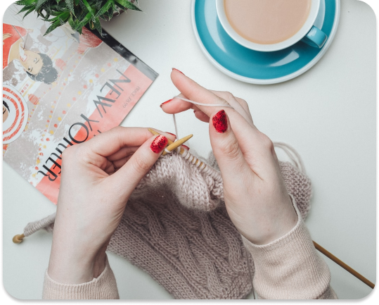

Konsultasi
Edukasi
Eksplorasi
Saling Bantu
Konsultasi
Edukasi
Eksplorasi
Saling Bantu
Merajut

Terdapat banyak kegiatan yang dapat dilakukan untuk meredakan stress, salah satunya adalah merajut.
Merajut dapat dilakukan untuk mengisi waktu luang bagi yang sedang di rumah saja.
Berikut ini tata cara merajut yang dapat diikuti dengan mudah oleh para pemula.
1. Menentukan hasil
Terdapat banyak produk yang dapat dibuat dengan rajutan. Contohnya syal, scarf, topi, selimut dan sweater.
Bagi pemula, syal dan topi menjadi opsi produk yang dapat dipelajari cara pembuatannya. Akan tetapi, tidak ada
salahnya jika ingin mencoba opsi – opsi yang lain terlebih dahulu.
2. Mempersiapkan alat dan bahan
Setelah menentukan produk apa yang ingin dibuat, langkah selanjutnya adalah menyiapkan alat serta bahan yang diperlukan.
Dua bahan utama yang diperlukan untuk merajut ialah benang dan jarum rajut (hakpen).
3. Mempelajari Teknik Rajut
Terdapat tiga Teknik dasar dalam merajut yaitu cast on, knit stitch dan cast off. Ketiga Teknik ini tentu akan menghasilkan rajutan yang berbeda.